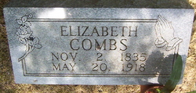

Elizabeth (Williams) Edwards Combs
2 November 1835 – 20 May 1918
Quick Facts
Immediate Family
Parents
- William Quin Williams (1804–1880)
- Mary “Polly” McAnally (1811–1878)
Spouses
- Thomas C. Combs (26 December 1843 – 11 March 1922)
Children
- Maude Allen Combs (18 June 1873 – 22 December 1958)
Siblings
- Not established in sources reviewed.
On Family Tree Sites
Life Timeline
2 November 1835 · FamilySearch and Find a Grave report birth in Kentucky; FamilySearch specifies Marion County.
12 January 1856 · FamilySearch profile reports marriage to Jacob Edwards in Liberty, Casey County.
24 May 1870 / 1885 · Conflicting marriage evidence for Thomas Combs and Elizabeth Williams/Edwards: an Indiana indexed license in 1870 and a Casey County marriage index in 1885.
20 May 1918 · Died in Casey County; Casey County News obituary published 28 May 1918, page 3, reports her death and burial at the Williams burying ground.
Life Story
FamilySearch’s published profile identifies Elizabeth Williams, born 2 November 1835 in Marion County, Kentucky, died 20 May 1918 in Casey County. It names William Quin Williams and Mary “Polly” McAnally as her parents, reports an 1856 marriage to Jacob Edwards, then a 1885 marriage to Thomas C. Combs, and lists Maude Allen Combs among their children.
Find a Grave memorial 18113047 uses the name “Elizabeth Edward Edwards Combs,” gives the same dates, and links her to Thomas C. Combs and daughter Maud. A Casey County family-history excerpt calls Thomas’s wife “Elizabeth Edwards WILLIAMS.” The combined evidence supports using Elizabeth (Williams) Edwards Combs as a working display name, while the exact sequence and legal dates remain unresolved.
The Casey County News clipping dated 28 May 1918, page 3, says the “death angel” visited T.C. Combs’s home and calls Elizabeth his beloved wife; it says she had been blind for twenty-five years and was buried near her old home at the Williams burying ground. The memorial lists Raney Cemetery. The clipping is direct contemporary evidence for her husband-name and death notice, but its short text does not name her maiden or former married surname.
Photographs & Family Gallery

Sources & Records
- FamilySearch, Elizabeth Williams, profile G8H2-RN4 — Published profile reports 2 November 1835–20 May 1918, parents William Quin Williams and Mary “Polly” McAnally, marriage to Jacob Edwards in 1856, later spouse Thomas C. Combs in 1885, and Maude among three children. Compiled-profile evidence.
- Find a Grave, Elizabeth Edward Edwards Combs, memorial 18113047 — Contributor-maintained memorial reports the same dates; links spouse Thomas C. Combs and children including Maud Allen Combs Campbell. One grave-marker photo was added by Rochelle Riordan 24 June 2007; a second image is a 1918 obituary clipping added by treesrmoi 2 July 2025.
- Casey County News, 28 May 1918, page 3; clipping attached to Find a Grave memorial 18113047 — Contemporary obituary calls Elizabeth T.C. Combs’s “beloved wife,” reports prolonged blindness, and says she was buried near her old home at the Williams burying ground. The displayed clipping identifies the issue/date/page; image uploaded by treesrmoi 2 July 2025.
- Combs &c. Families of Casey County, Kentucky — Transcribed Casey County marriage entry and family-history excerpt call Thomas C. Combs’s wife Elizabeth Edwards / Elizabeth Edwards Williams; secondary compilation, not original civil proof.
- FamilySearch Indiana marriage index, Thomas Combs and Elizabeth Williams, record VZQT-B1Z — Index reports a marriage license dated 24 May 1870 in Jackson Township, Jackson County, Indiana. The identity match to Elizabeth in the Casey County family is not yet established.
- FamilySearch, Maude Allen Combs, profile LJJX-TQM — Names Elizabeth Williams as Maude’s mother; compiled-profile evidence.
Person Archive
Research Notes and Open Questions
The family cards preserve the source variants: FamilySearch calls her Elizabeth Williams; Find a Grave says “Elizabeth Edward Edwards Combs”; the Combs-family compilation calls her Elizabeth Edwards Williams. “Elizabeth (Williams) Edwards Combs” is a working display form, not a claim that every marriage detail is proven.
The evidence for marriage to Thomas is chronologically inconsistent: an Indiana marriage-license index dated 24 May 1870 (Thomas Combs and Elizabeth Williams) and a Casey County 1885 marriage index (Thomas C. Combs and Elizabeth Edwards). Original license images and a direct identity bridge remain needed.
Burial place differs: Find a Grave’s field says Raney Cemetery; the 28 May 1918 obituary says Williams burying ground near her old home. The clipping is preserved locally and in the gallery; do not silently replace either source claim.
The 2007 Find a Grave photograph shows a grave marker, not a portrait. The 1918 clipping is a document image, not a portrait.
DNA
No DNA information added.
Family Notes
Parent couple profile for James Logan Campbell × Maude Allen Combs. Name forms, marriage chronology, and burial descriptions are preserved with their sources.
Profile history
Created 28 November 2026: Generation VIII parent profile; reciprocal child/spouse links and available marker or document images added with source attribution.
Edit or add to profile
No verified profile-contribution link is currently attached to this page.